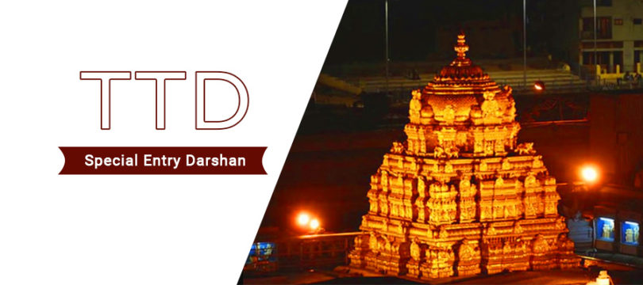

Special entry

- The Special Entry Darshan(Seeghra Darshanam) is introduced on 21-Sep-2009 to provide quick Darshan to the Pilgrims.
- The cost of the Ticket is Rs.300/- per pilgrim with Single Laddu free of cost and booking is open round the clock.
- The Advance Booking of Special Entry Darshan is introduced w.e.f. 27.August.2014.
- Pilgrims can book Special Entry Darshan tickets for the current day 3 hours prior to Darshan Slot subject to availability of Quota. Pilgrims can make eHundi Offering while booking Darshan tickets.
- Pilgrims can avail the Advance Booking of Special Entry Darshan through Internet Booking(https://tirupatibalaji.ap.gov.in), and Indian Post Offices.